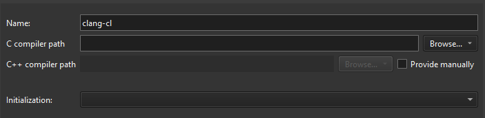
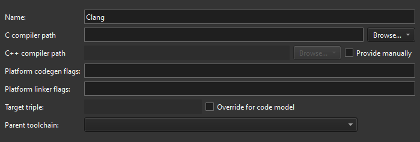
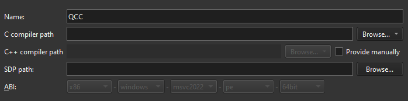

Compilers
Lists the registered compilers. You can add custom compilers to the list.
To build an application using GCC, MinGW, Clang, or QCC, specify the path to the directory where the compiler is located and select the application binary interface (ABI) version from the list of available versions. You can also create a custom ABI definition. For QCC, also specify the path to the QNX Software Development Platform (SDP) in SPD path.
To enable Microsoft Visual C++ Compilers (MSVC) and clang-cl to find system headers, libraries, and the linker, Qt Creator executes them inside a command prompt where you set up the environment using vcvarsall.bat. For these compilers, you also specify the path to the script that sets up the command prompt in Initialization.
You specify the compiler to use for each kit in Preferences > Kits.
To set compiler preferences according to the compiler type:
- Go to Preferences > Kits > Compilers.
- Select a compiler in the list.
- In Name, enter a name for the compiler to identify it in Qt Creator.

Adding a clang-cl compiler.
- In C compiler path, enter the path to the directory where the C compiler is located.
Select Remote in the dropdown menu in Browse (Choose on macOS) to add the path to the compiler on a remote Linux device or in Docker.
- In C++ compiler path, select Provide manually to enter the path to the directory where the C++ compiler is located.
Select Remote to add the path to the compiler on a remote Linux device or in Docker.
- In Initialization, select the
vcvarsall.batfile for setting up the command prompt to use.
Adding a Clang compiler.
- In Platform codegen flags, check the flags passed to the compiler that specify the architecture on the target platform.
- In Platform linker flags, check the flags passed to the linker that specify the architecture on the target platform.
- In Target triple, specify the GCC target architecture. If code model services fail because Clang does not understand the target architecture, select Override for code model.
- In Parent toolchain, select a MinGW compiler, which is needed because Clang does not have its own standard library.

Adding a QCC compiler.
- In SDP path, specify the path to the QNX Software Development Platform (SDP).
- In ABI, enter an identifier for the target architecture. This is used to warn about ABI mismatches within the kits.
- In Name, enter a name for the compiler to identify it in Qt Creator.
See also Add compilers, Add custom compilers, Add Nim compilers, and Supported Platforms.